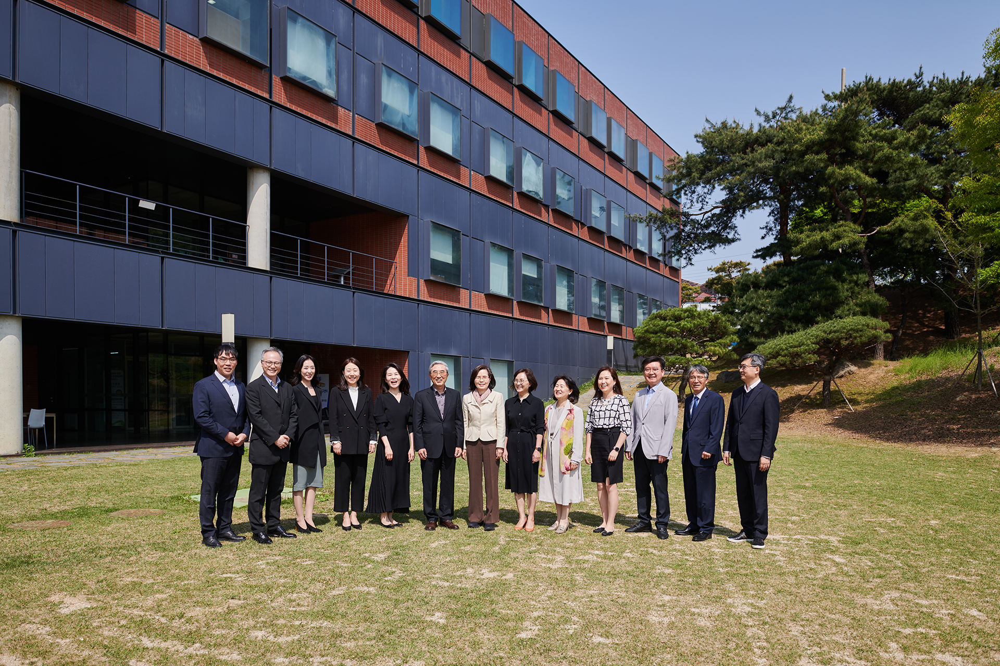

CHA University College of Pharmacy Alumni Association
차에서 시작된 인연,
함께 열어갈 내일.
배움의 시간을 넘어, 삶의 든든한 동료로.
차 의과학대학교 약학대학 총동문회가 함께합니다.
다시 만나는 우리, 더 넓어지는 연결약학대학 총동문회 창립총회
2027 FEB02.21SUNDAY
행사 예정
총동문회 출범식 및 제1회 정기총회
차바이오컴플렉스 국제회의실
ALUMNI SERVICE동문을 위한
동문을 위한
빠른 안내
ALUMNI NEWS
우리의 소식

OUR BEGINNING, OUR CONNECTION함께 잇는 동문의 힘
같은 배움에서 시작해
서로의 가능성이 됩니다.
각자의 자리에서 쌓아온 경험과 마음이 모여
더 단단한 동문 공동체를 만듭니다.
동문 교류기수를 넘어 이어지는 만남
성장과 나눔함께 나누는 지식과 경험
CONNECTED WITH CHA
언제나, 모교와 함께
우리의 시작을 기억하고, 새로운 소식을 이어갑니다.


TOGETHER, WE GO FURTHER